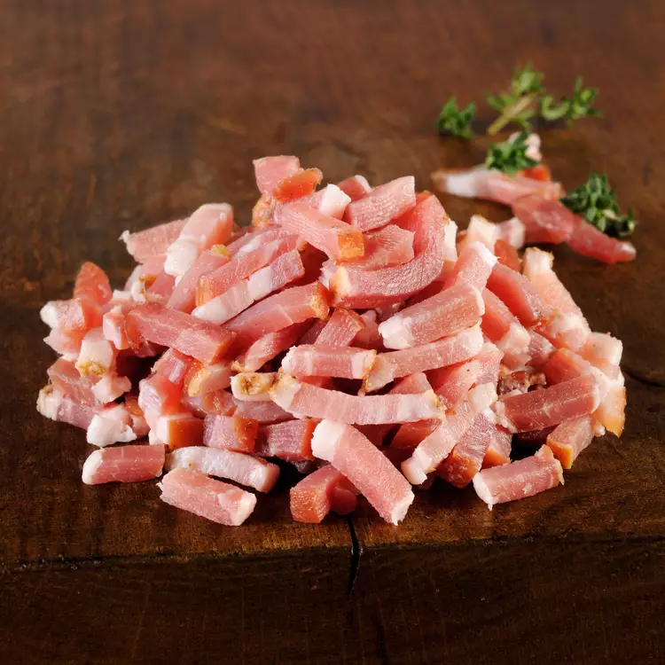

TARTIFLETTE

INGREDIENTS : ( 4 PEOPLE )

1 Reblochon ( 500 g )

1 kg Potatoes

200 g Bacon lardons

2 Onions

200 ml Cream

Salt / Pepper

1 Reblochon ( 500 g )
1 kg Potatoes
200 g Bacon lardons
2 Onions
200 ml Cream
Salt / Pepper
➤ Peel 1 kg of potatoes, then cut them into fairly large pieces.
➤ Cook them in boiling salted water for 15 minutes.
➤ Sauté 2 chopped onions in a knob of salted butter for a good 5 minutes over medium heat.
➤ Add the bacon lardons, season with pepper, and cook for 5 minutes.
➤ Add 200 ml of semi-thick cream and let infuse for 5 minutes.